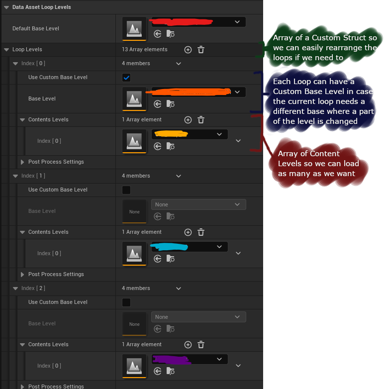
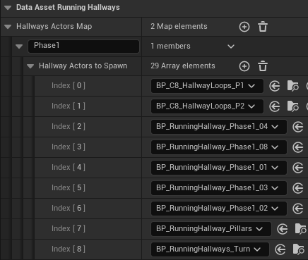

- Released On: 03/12/2025
- Duration: 3 Months
- Freelance Work
Tech
Unreal Engine 5
- Blueprints
- Unreal C++
- Level Sequencer
- PaperZD
- UI Materials
Summary
- Programmed chapter specific Gameplay Mechanics
- Setup certain chapters according to design using existing systems
- Utilized Level Sequencer for cutscenes and setting up scenes
- Extra debugging support
Links
CONTRIBUTIONS
Looping Hallways
In Chapter 4, Sakura Miko will go through hallways that look similar but will have different content as she walks through. After the 2nd Hallway, the next hallway will have holograms that spawn that speak and the post process will change to a more cooler colour temperature indicating that it is a vision of the past. In the 8th Hallway, a boss will appear behind Sakura Miko and she has to run till the end without getting caught.

Levels for each Hallway Loop
Each looping hallway is their own Level which contains the content needed for each different loop and the main hallway, which never changes, is a single base level. The level is loaded by a trigger box in the middle of the hallway which is in the base level. This triggers a LoadNextLevel function in the GameState which will then get the next loop levels to be loaded from the DataAsset. I utilize the Load Level Instance function which supports loading the level in a specific location.
At the base level there is a BP_LoopAttachmentActor which is specifically placed at the end of the hallway and referenced by the load level trigger box. When the player walks through it, it will trigger the next level to be loaded and provide the reference to the BP_LoopAttachmentActor which we can then retrieve the location to spawn the next hallway.
The entrances to the hallway is always at the origin of the level (X=0,Y=0,Z=0) and this is at the base level which will never change for all the other loops. As long as the entrances are at the origin, the next level being loaded will always load at the correct location without a noticeable gap.
Everytime the next level is loaded, the previous level will also be unloaded for optimization.
Lockpicking UI
I was responsible for implementing the lockpicking mechanic in Chapter 7 after collecting all the Building Diagrams. This was done by a main widget which is the large hexagon and adding Timing Points as extra widgets. The locations of each point was setup using a spline that is positioned right in front of the camera and each point is a widget and location is customizable by providing a Time on the spline in an array in the BP.
The outer hexagon itself is a material using an image that is the outer hexagon and the inner progress fill is done by using a Hexagon SDF function from the UIMaterialLab to mask out the progress and the colour can easily be adjusted since it is just white.
Timing Point positining
An array of Timing Points are kept in the main Lockpick blueprint which hold the Time on the Spline and an associated InputAction. For this case, it wasn't used anymore as it was favoured to have random keys for each point so there is a separate array of InputAction Pool that is randomly picked.
Then by going through the array, the world location can be retrieved from the spline and provided to the Timing Point widget to project to the screen and from there the position of the widget on the screen can be set at the correct point.
Since the timing points are on a spline we can easily control the progress with a float going from 0 to 1. As it goes through from 0 to 1 at a speed which is changeable if needed, each timing point is updated with the current progress. This is important because if the player fails to press on time, the player can fail the current lockpicking process and will need to restart. From this, we have a LeniencyWindow variable that defines how much time is allowed before it fails and the player needs to restart.
When the player presses one of the keys, each timing point will check if the correct key is pressed and it is pressed within the leniency window. If it is correct, the progress continues. If it is wrong, the progress will stop and the lockpicking will reset.
Endless Runner
In Chapter 8, I was also responsible for the Endless Runner mechanic (like Temple Run) but with an ending and in first person. The player needs to dodge 3 obstacles which are fences, pillars and fireballs. Each of these obstacles are their own BP and each section with a certain pattern of traps are their own BP as well. There was consideration to make it in a level but it would've been more troublesome to load than just spawning a BP with the traps and section of the hallway.
The hallway background were first setup in a level, and converted into a blueprint class with a bunch of child actors and then converted into a single static mesh so that when the BP is spawned it does not spawn 100s of static mesh components which will cause frame drops. I created an ActorActionUtility to convert the child actors into static mesh components so it is easier to edit in the Blueprint and then using Merge Actors to convert the static mesh components into a single static mesh.

Spawning the Hallways
A few variants of the hallways with different obstacle placements are created and they are all managed in a DataAsset and the GameState goes through the DataAsset and spawns the next hallway as the player runs through a trigger box in the middle of each hallway. To prevent the player from seeing the void, we made sure to have 10 hallways spawned initially an also to have turning hallways where a light will go green signalling the player to turn left or right depending on where the light is positioned at.
With the DataAsset and having different variants of obstacles, we can easily change the order of the hallways with no change of code and the Designer can create even more variants by simply duplicating a BP and adding obstacles into it and adding it into this DataAsset and the new hallway will be implemented.